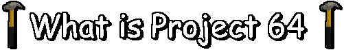

Project 64 is a SM64 inspired bobloz gaem where you collect Stars, just like in SM64 omgsh!1
What is Project 64 all about?1/!/1/
Project 64 takes place in the old Roblox, around the years 2008-2011.
The Roblox Servers have shut down due to the lack of energy being put into the Servers, so inorder to play your kewl lil Roblox games again, you need to save the Servers yourself!
And in order to do that... you need get that Power, by collecting Stars!1
When will Project 64 fully release!1!1
Currently, this is not set yet.
It's not sure when Project 64 will be fully done, and when it will even reach it's actual Beta Phase. Again, currently, it's still in Alpha Phase.
If you would like, you can check out the Project 64 Manual and get informed about... some very useful stuff!1
13.12.2024
Added the 1st star (Guess the Characters)
13.12.2024
Added Christmas Decoration
13.12.2024
Christmas Icon
03.12.2024
Advanced Save-File Bux and Stars Saving System
26.10.2024
Halloween Icon
18.10.2024
Added Global Build Mode
10.09.2024
Added "Remaster" Warning in the Old Project 64